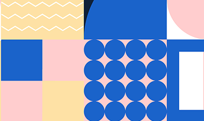

HTML & CSS
Публікація 1 Вересня 2025
Практична №3
Мета практичної роботи полягає в тому, щоб налаштувати середовище розробки VS Code, а також реалізувати картку блогу для вдосконалення фундаментальних навичок з HTML та CSS.